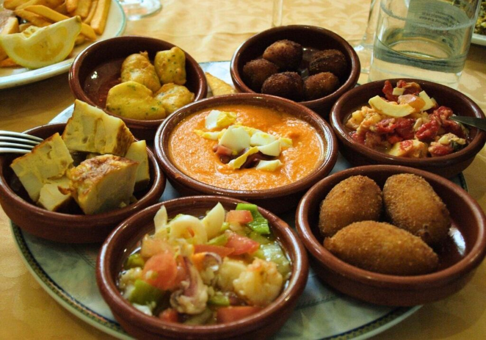

Gastronomía Típica de Sevilla
Platos Principales
- Gazpacho andaluz
- Pescaito frito
- Soldaditos de Pavía
- Bacalao desalado
- Rebozado de harina y azafrán
Ingredientes Comunes
- Aceite de oliva virgen extra
- Aceitunas de mesa (Manzanilla y Gordal)
- Naranjas amargas
Conceptos Gastronómicos
- Tapeo
- Costumbre de comer pequeñas raciones de diferentes platos.
- Montadito
- Pequeño bocadillo de diversos ingredientes calientes o fríos.
- Adobo
- Técnica de marinado para carnes y pescados con especias y vinagre.
Estadísticas de Consumo
| Plato | Temporada Alta |
|---|---|
| Gazpacho | Verano |
| Cocido Andaluz | Invierno |
| Torrijas | Semana Santa |
Galería Multimedia
